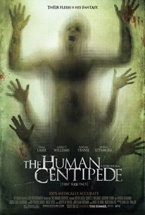

IT

Release Date: Sep 8, 2017
Director: Andy Muschietti
Rating:
Seven young outcasts in Derry, Maine, are about to face their worst nightmare -- an ancient, shape-shifting evil that emerges from the sewer every 27 years to prey on the town's children. Banding together over the course of one horrifying summer, the friends must overcome their own personal fears to battle the murderous, bloodthirsty clown known as Pennywise.
THE HUMAN CENTIPEDE

Release Date: Apr 30, 2010
Director: Tom Six
Rating:
A deranged surgeon (Dieter Laser) plans to make his morbid fantasy come true by suturing three people together through their gastric systems.